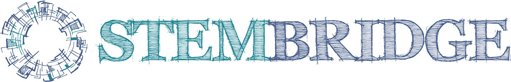

"Тайны Голубых озер" - образовательная инициатива частной школы Стембридж в партнёрстве с IT-школой Myfreedom. Подростки 12-16 лет стали разработчиками уникального продукта: интерактивной карты маршрутов по языческим капищам, памятниками природы и истории региона Голубые озера, что возле местечка Лынтупы, Витебской области Беларуси.
Вместе с местным краеведом Алесем Гарбулем ребята посетили 10 уникальных мест края, записали легенды, сделали и обработали фото, смонтировали видео о каждом из них.
Благодаря этой работе любой турист сможет найти капище Ярилы, богини рока Лаймы, бога ветров Вееса, взять на память жёлудь 500-летнего дуба-оберега.
Уникальность проекта в содержании и междисциплинарности. Участники получили навыки программирования, фото и видеосъемки, монтажа, работы с текстом, сбора этнографического материала в полевых условиях.
Кураторы и преподаватели:
- руководитель проекта и куратор работы с текстами Екатерина Гончарова
- куратор направления работы с фотографией Игорь Калашников
- куратор работы с видео Божена Щербинина
- куратор и преподаватель программирования сайта Анна Арзамасцева
Разработчики и участники проекта:
- Анна Адотик
- Полина Адотик
- Роман Неведомский
- Николай Кравченко
- Светлана Гончарова
- Алексей Прибытков
- Никита Горгоц
- Егор Катушков
- Алекс Працкевич
- Полина Панченко
- Анастасия Кедер
- Алиса Юркевич
- Андрей Вишневский
- Дарья Тэрро

